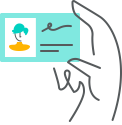
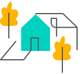

On any given night, 2 million people stay in homes on Airbnb in 100,000 cities all over the world. There are more than 6 million listings in 191 countries to choose from —that’s more than the top five hotel chains combined. What makes all of that possible? Trust.
Risk scoring Every Airbnb reservation is scored for risk before it’s confirmed. We use predictive analytics and machine learning to instantly evaluate hundreds of signals that help us flag and investigate suspicious activity before it happens. |

Watchlist & background checks While no screening system is perfect, globally we run hosts and guests against regulatory, terrorist, and sanctions watchlists. For hosts and guests in the United States, we also conduct background checks. |

Preparedness We run safety workshops with hosts and leading local experts and encourage hosts to provide guests with important local information. We also give any host who wants one a free smoke and carbon monoxide detector for their home. |